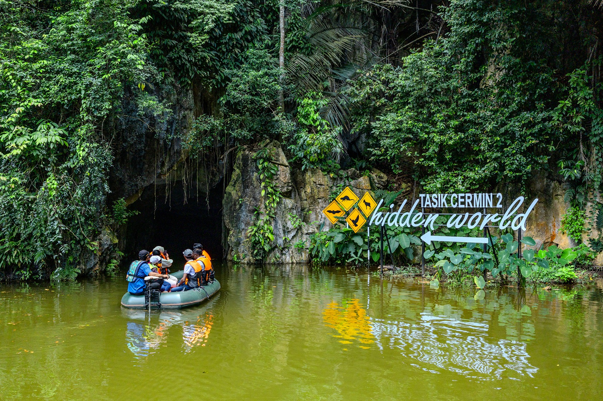
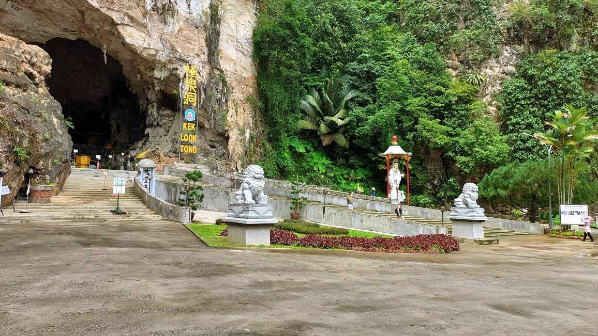
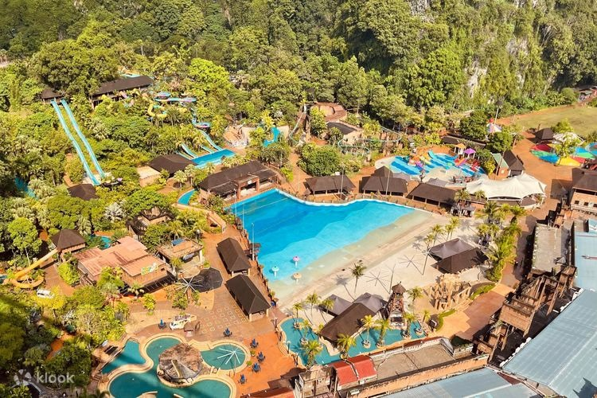
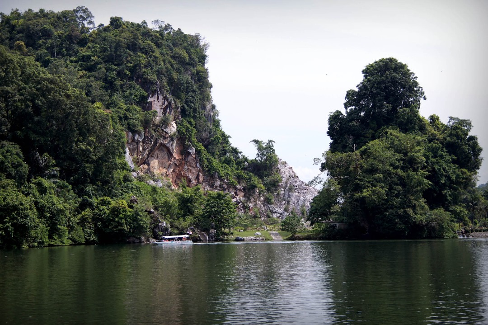
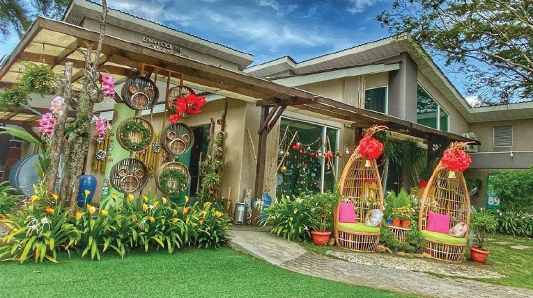

Top
An Unforgettable Adventure at Escape Ipoh: Facilities That Wow!
Escape Ipoh offers a thrilling adventure with its diverse range of
activities and top-notch facilities, ensuring an unforgettable
experience for visitors of all ages. From exhilarating zip lines
to relaxing water attractions, the park provides a perfect blend
of excitement and comfort in a beautifully maintained setting.
Escape Ipoh
July 14, 2024
12 comments
by Andrew Watson

New
Discovering the Hidden Gem of Ipoh: A Day at Tasik Cermin
Tasik Cermin in Ipoh offers a serene escape with its stunning
mirror-like lake surrounded by towering limestone cliffs,
providing a picturesque and tranquil retreat. Perfect for nature
lovers and photographers, this hidden gem promises a peaceful and
enchanting experience amidst breathtaking natural beauty.
Tasik Cermin
April 28, 2024
39 comments
by Lily Tutu

Top
Exploring the Tranquil Beauty of Kek Lok Tong in Ipoh
Kek Lok Tong in Ipoh offers a captivating blend of natural beauty
and spiritual tranquility, with its stunning limestone cave
formations and serene Buddhist and Taoist statues. The adjoining
landscaped garden provides a peaceful retreat, making it an ideal
destination for meditation, relaxation, and cultural exploration.
Kek Lok Tong
August 1, 2024
5 comments
by Ethan Walker

A Thrilling Day at Lost World of Tambun: Ipoh's Ultimate
Adventure Destination
The Lost World of Tambun in Ipoh offers an exhilarating mix of
water rides, amusement park attractions, and wildlife encounters,
set against a backdrop of lush greenery and limestone hills. With
its relaxing hot springs and enchanting nighttime Lumina show, it
promises an unforgettable adventure for visitors of all ages.
Lost World Tambun
December 23, 2023
70 comments
by Wilson Winter

Celebrating National Day at Sultan Abdul Aziz Recreation Park: A
Patriotic and Joyful Experience
Celebrating National Day at Sultan Abdul Aziz Recreation Park in
Ipoh was a vibrant and joyful experience, filled with cultural
performances, community activities, and a stunning fireworks
display. The park's beautiful natural setting provided the perfect
backdrop for a day of unity, patriotism, and fun for all ages.
Sultan Abdul Aziz Recreation Park
August 31, 2023
152 comments
by Anna Clon

Summer Serenity at Lang Mountain: A Refreshing Escape in Ipoh
Lang Mountain in Ipoh offers a serene summer escape with its lush
landscapes, striking limestone formations, and panoramic summit
views. The tranquil hiking trails and diverse flora and fauna make
it a perfect destination for nature lovers and those seeking a
peaceful retreat.
Lang Mountain
June 21, 2024
31 comments
by Hannah Wandy